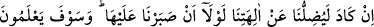
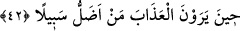
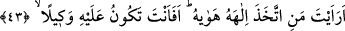
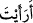

Peygamberlerle eşitliğe, kalkıştılar; velileri de kendileri gibi sandılar
İşte biz de insanız, onlar da insan. Biz de uykuya ve yemeğe bağımlıyız, onlar da,
dediler
Körlükleri yüzünden, arada sonsuz fark olduğunu bilmediler.
İki çeşit arı aynı yerden yedi; ama bunun biri zehir oldu, öteki bal
İki çeşit ceylan ot yiyip su içti; birinden fışkı ötekinden hâlis misk geldi,
İki çeşit kamış aynı kaynaktan su içti; birisi boş, öteki şekerle dolu
42. “Şâyet ilâhlarımıza inanmakta sebat göstermeseydik, gerçekten bizi
neredeyse ilâhlarımızdan saptıracaktı” diyorlar. Azabı gördükleri zaman, asıl kimin
yolunun sapık olduğunu bilecekler!
“Şâyet ilâhlarımıza inanmakta” ve onlara ibâdette sabır ve “sebat göstermeseydik,
gerçekten” Muhammed “bizi neredeyse ilâhlarımızdan saptıracaktı.” Bizi onlardan
uzaklaştıracak şekilde onlara ibâdet etmekten tamamen çevirecekti “diyorlar.” Yâni
gerçekten neredeyse aldatıcı sözlerle ve büyük gayretle iddiâlarını ispat için deliller
göstererek bizi yoldan çıkarıp tanrılarımıza tapmaktan alıkoyacaktı.
Allah Teâlâ onlara cevaben şöyle buyurdu: İnkârlarının zorunlu kıldığı “Azabı
gördükleri zaman, asıl kimin yolunun sapık olduğunu” geç de olsa kesin olarak
“bilecekler!”
Onlar azâbı âhirette gözleriyle açıktan göreceklerdir. Bedir’de gördükleri azâb da bu
azâba dâhildir.
Onlar Rasûlullah (s.a.)’in kendilerini saptırdığını ileri sürerek sapıklığı O’na nisbet
ettiler. Çünkü bir kimse ancak kendisi sapık olduğu zaman başkalarını saptırabilir.
Allah da onların iddiâlarını bu şekilde reddetti ve onlara mühlet verse de ihmal
etmediğini bildirdi.
Âyette yolun sapıklıkla vasfedilmesi mecâzîdir. Aslında o yola girenlerin sapık
olduğu kasdedilmiştir.
43. Kötü duygularını kendisine ilâh edinen kimseyi gördün mü? Sen (Rasûlüm!)
ona koruyucu olabilir misin?
“Kötü duygularını” hevâsını “kendisine ilâh edinen kimseyi gördün mü?” “